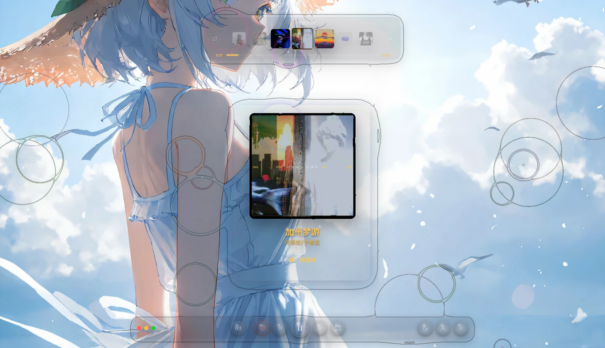
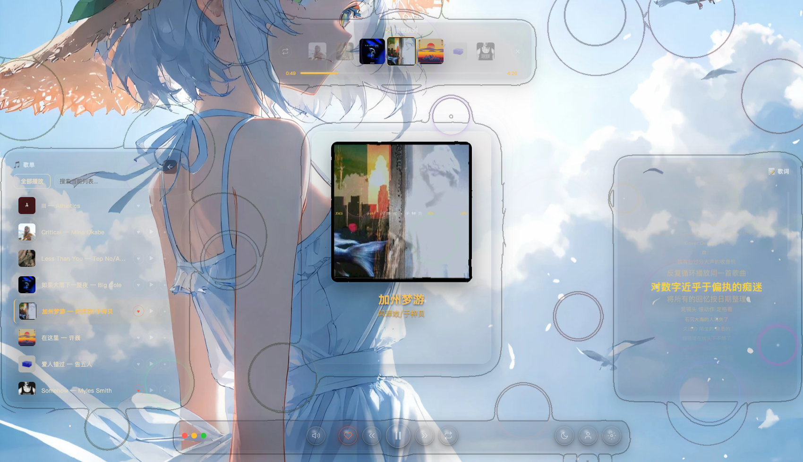
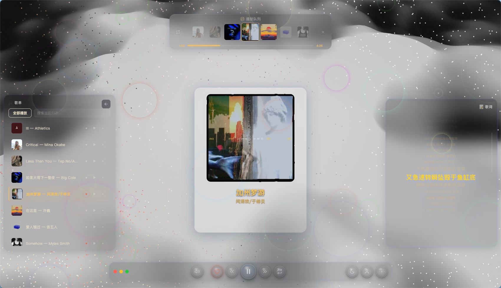

FLUID MUSIC · 使用教程
FluidMusic
流体动态音乐播放器 · 快速上手

界面概览
macOS 桌面音乐
深色流体动态背景
中心 3D 粒子封面 · 四周悬浮仓环绕
中心 3D 粒子封面 · 四周悬浮仓环绕

3D 粒子封面
动态 粒子云
鼠标拖拽自由旋转 3D 视角
频谱律动 · 沙画切歌过渡
软光点渲染 · 环绕光晕
频谱律动 · 沙画切歌过渡
软光点渲染 · 环绕光晕

背景特效
三种 视觉模式
流体水波纹 · 不规则几何粒子
纯色静态 · 九套配色方案
纯色静态 · 九套配色方案

DIY 设置
七标签页 控制面板
特效封面歌词歌单背景悬浮仓系统
所有参数实时预览
支持导出导入配置备份
支持导出导入配置备份

悬浮仓
四分区 毛玻璃
上 · 歌曲队列
右 · 实时歌词
下 · 播放控制
左 · 歌单浏览
鼠标悬停即显 · 点击常驻
操作体验
完整 快捷键
空格播放暂停 · 方向键切歌调音量
M 键静音 · L 键收藏
深度集成 macOS 媒体键
M 键静音 · L 键收藏
深度集成 macOS 媒体键
辅助窗口
桌面歌词 & 迷你播放器
📝
独立窗口始终置顶
🖥
精简控制界面
右键菜单中即可打开
FLUID MUSIC
开始 体验
导入歌单，调好配色
沉浸式享受音乐与视觉的双重盛宴
感谢观看 ♪
沉浸式享受音乐与视觉的双重盛宴
感谢观看 ♪